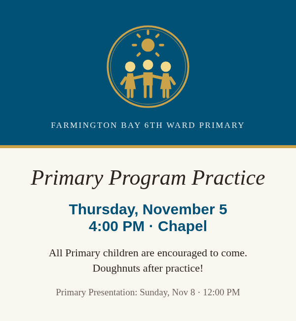
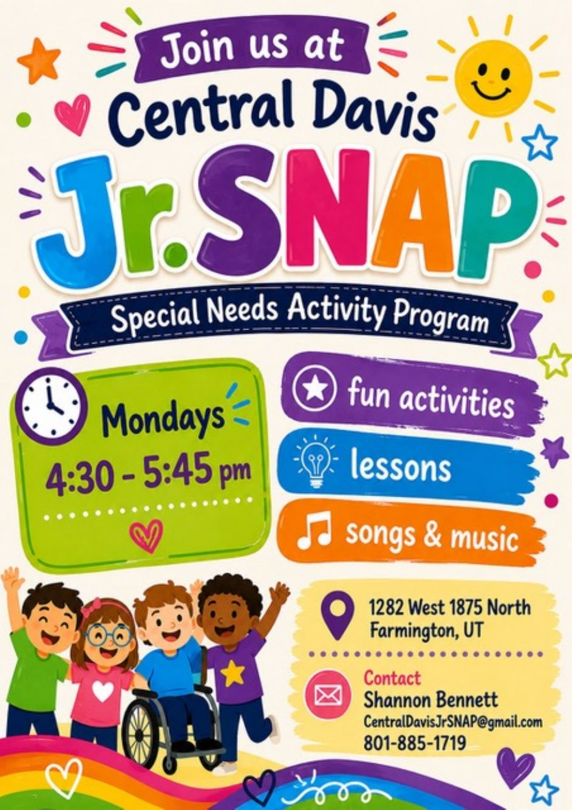

Primary Program PracticeWard Primary · all Primary children encouraged; doughnuts after
Thu, Nov 5 · 4:00 PM
Chapel · Primary Presentation is Sun, Nov 8 at 12:00 PM
“Suffer the little children to come unto me.”Mark 10:14
Tap Text to send a message.

Thu, Nov 5 · 4:00 PM
Chapel · Primary Presentation is Sun, Nov 8 at 12:00 PM

Mondays school is in session · 4:30 – 5:45 PM · Christmas Program Mon, Dec 7
1282 W 1875 N, Farmington
No upcoming activities right now. See all Upcoming Events.
See all Upcoming Events for the Ward and Stake.
Service, meals, rides, and assignments sign-up links will go here.
[Sign-up link]Placeholder More resources to be added.